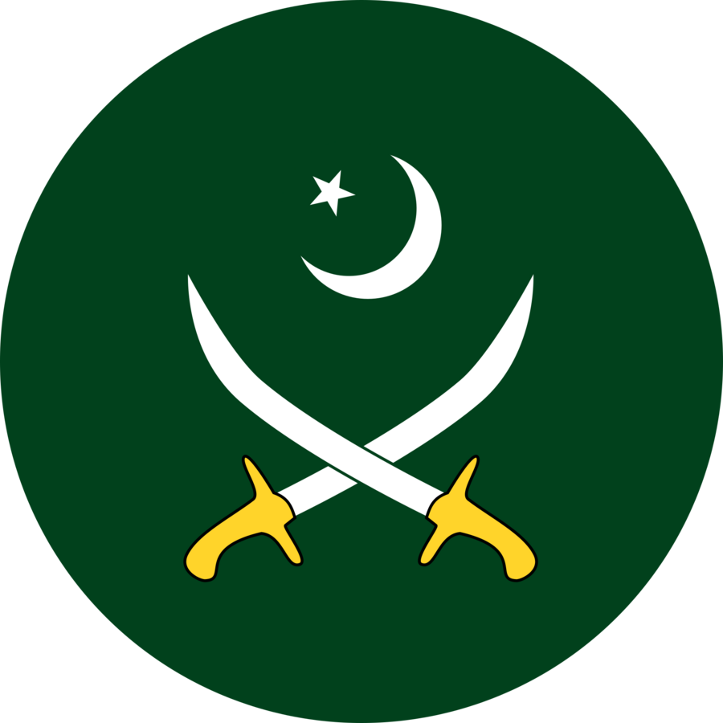

Service Branches
Army
Airforce
Navy
Pakistan Army

After the partitioning of British India in 1947, the Pakistan Army was formed by Indian Muslim officers serving in the British Indian Army. The largest branch of the nation's military, it is a professional, volunteer fighting force, with about 550,000 active personnel and 500,000 reserves (though estimates vary widely). Although, the Constitution provides a basis for the service draft, conscription has never been imposed in Pakistan. A single command structure known as General Headquarters (GHQ) is based at Rawalpindi Cantt, adjacent to the Joint staff HQ. The army is commanded by the Chief of Army Staff (COAS), by statute a four-star army general, appointed by the president with the consultation and confirmation of the prime minister. As of 2022, General Asim Munir was the chief of army staff.Army General Sahir Shamshad Mirza is the current Chairman Joint Chiefs of Staff Committee. The army has a wide range of corporate (e.g.: Fauji Foundation), commercial (e.g.: Askari Bank), and political interests, and on many occasions has seized control of the civilian government to restore order in the country.
Pakistan Airforce

Brought into existence in 1947 with the establishment of the Pakistan Air Force Academy, the Pakistan Air Force (PAF) is regarded as a "powerful defence component of the country's defence.The prefix "Royal" was added in 1947, but dropped when Pakistan became an Islamic republic in 1956. The PAF is the seventh-largest air force and the largest in the Muslim world, with about 943 combat fighter jets and over 200 trainer, transport, communication, helicopter, and force-multiplier aircraft. A single command structure Air Headquarters (AHQ) is based at Islamabad. The air force is commanded by the Chief of Air Staff (CAS), by statute a four-star air chief marshal, appointed by the president, with the consultation and confirmation of the prime minister. As of March 2021, Air Chief Marshal Zaheer Ahmad Babar is the CAS.Historically, the air force has been heavily dependent on U.S., Chinese, and French aircraft technology to support its growth, despite impositions of the Pressler amendment. While F-16s continue to be a backbone of the air force,the local development and quick production of the JF-17 have provided an alternative route to meet its aerial combat requirements.According to PAF accounts, the air force plans to retire several of its ageing French-licensed Mirage III and Mirage 5 fighter jets.
Pakistan Navy

The Pakistan Navy was formed in 1947 by the Indian Muslim officers serving in the Royal Indian Navy. The prefix "Royal" was soon added but dropped in 1956 when Pakistan became an Islamic republic. Its prime responsibility is to provide protection of nation's sea ports, marine borders, approximately 1,000 km (650 mi) of coastline, and supporting national security and peacekeeping missions. With approximately 71 commissioned warships and 36,000 active duty personnel, its operational scope has expanded to greater national and international responsibility in countering the threat of sea-based global terrorism, drug smuggling, and trafficking issues.A single command structure known as Naval Headquarters (NHQ) is based at the Rawalpindi Cantt, adjacent to the Joint Staff HQ. The navy is commanded by the Chief of Naval Staff (CNS), who is by statute a four-star admiral, appointed by the president, with the required consultation and confirmation of the prime minister.As of October 2020, Admiral Muhammad Amjad Khan Niazi is the chief of naval staff. Navy Day is celebrated on 8 September to commemorate its service in the Indo-Pakistani War of 1965.